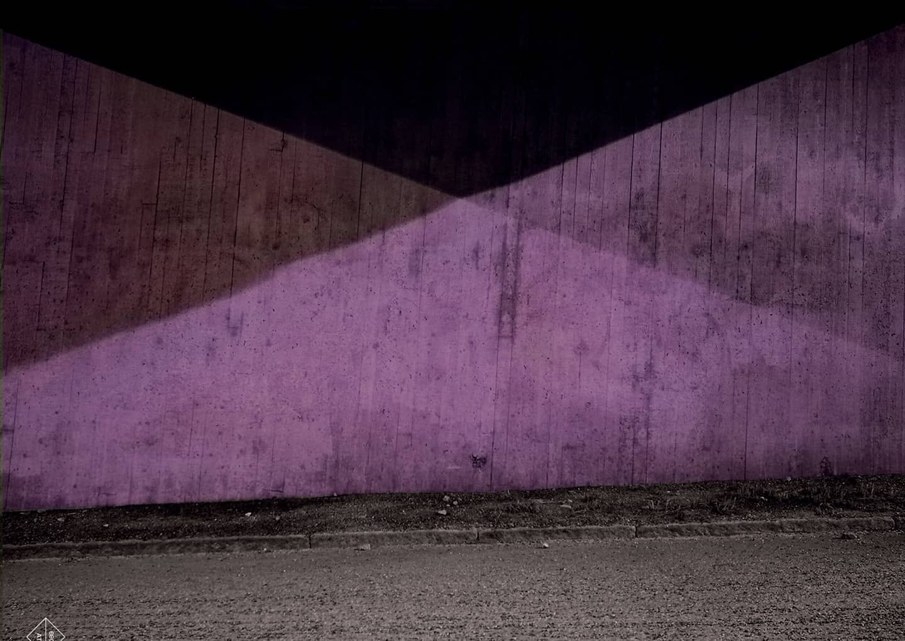
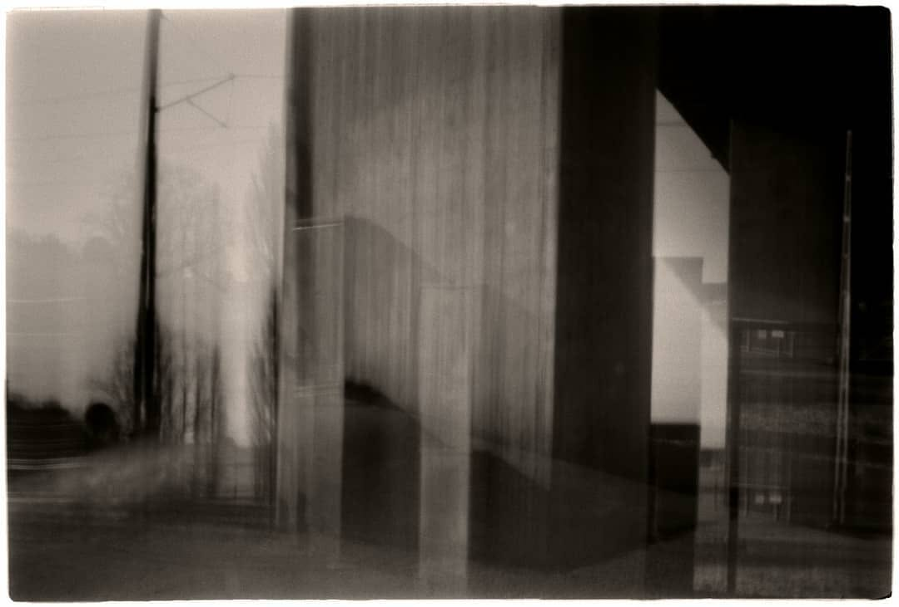
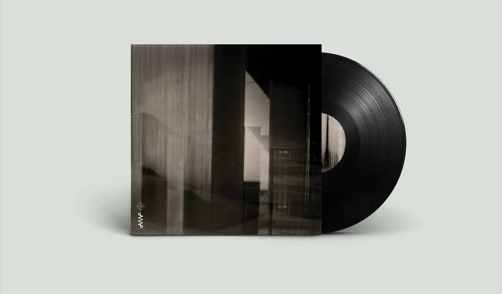

AIKA: TilaSulkunen & Toivanen · 2021 · 20.3 Original photograph · 20.3 Published cover Release / Bandcamp
LowlandsPål Nyberg · 2021 · Concrete (PiCa135) Original photograph · Concrete Published cover Lowlands / Lira